Дата: 2026-10-01. Объект — ваша кошка-механик с джетпаком. Чекпоинт Krea2_turbo_uncensored_edit_v1.1-fp8_scaled, текст-энкодер qwen3vl_4b (krea2), VAE qwen_image, 10 шагов, euler/simple, cfg 1, 1024×1536 — так же, как в ваших картинках. Я изучил 1407 ваших PNG в Text2Img и взял оттуда типичные настройки и силы лор. На каждую лору 10 картинок: после каждой я смотрел результат и правил промпт, силу и seed. Плюс контрольные картинки без лоры с тем же промптом и seed (пунктирная рамка), чтобы отделить вклад лоры от того, что база умеет сама. Оранжевая рамка и ★ — лучшая картинка лоры. Клик по картинке открывает её крупнее.
| Лора | Вердикт | Сила | Лучшая |
|---|---|---|---|
| Disney | использовать | 0.8–1.0 + «Disney 2D animation style» | D09 |
| Pixar | использовать (умеренно) | 0.9–1.0, триггер 3dpixar | P10 |
| Incase | нишевая | 0.7–0.8, иллюстрации и портреты | I08 |
| KNP | не нужна (SFW) | — | K09 |
| Identity Edit | только 0.3–0.35 на Turbo | 0.3–0.35; 1.0 = шум | ID09 |
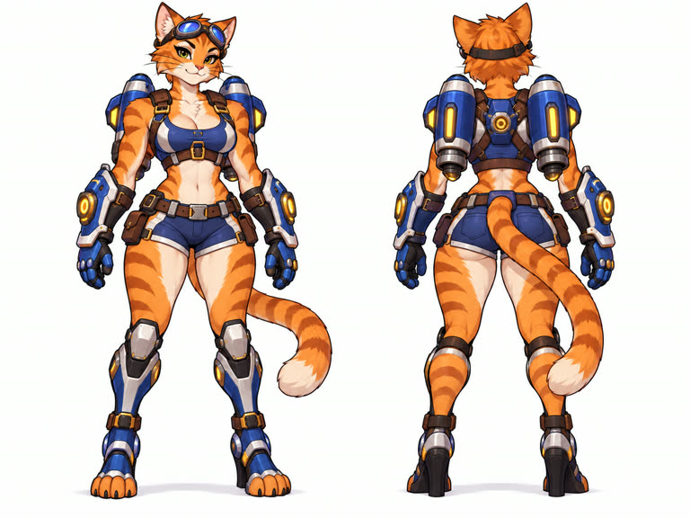
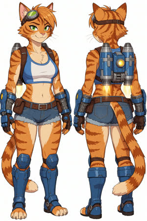
Базовая картинка без лоры: чистый cel-shading, костюм точный, вид спереди и сзади.
Character design sheet of an adult anthropomorphic orange tabby cat woman, a jetpack mechanic, full body front view and back view side by side. Orange fur with darker tiger stripes, cream chest and muzzle, green eyes, confident smirk, aviator goggles on her head. Athletic curvy build. Blue and white crop top with brown leather harness straps, denim blue short shorts with a brown utility belt and pouches, twin blue-and-silver jetpack thrusters with glowing yellow lights on her back, oversized blue mechanical gauntlets, armored blue knee-high boots with digitigrade paws, long striped tail with a cream tip. Plain white background, even studio lighting.Ставить 0.8–1.0 и обязательно писать в промпте «Disney 2D animation style», иначе эффект почти нулевой. Стабильна до 1.2. Даёт рендер полнометражного мультфильма, кошачью голову и лучшую анатомию, чем те же слова без лоры: контроль без лоры выглядит как мультсериал 90-х с человеческими волосами. Лучший лист персонажа — D09, лучшие сцены — D07 и D10.
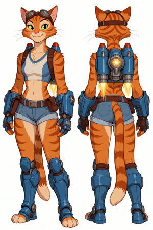
Самый чистый лист персонажа: без человеческих волос, строгий вид спереди и сзади, всё снаряжение одинаково на обоих видах. ЛУЧШАЯ (Disney).
Disney 2D animation style, hand-drawn animated feature film look, model sheet. Character design sheet of an adult anthropomorphic orange tabby cat woman, a jetpack mechanic, full body front view and back view side by side. Orange fur with darker tiger stripes, cream chest and muzzle, green eyes, confident smirk, aviator goggles on her head. Athletic curvy build. Blue and white crop top with brown leather harness straps, denim blue short shorts with a brown utility belt and pouches, twin blue-and-silver jetpack thrusters with glowing yellow lights on her back, oversized blue mechanical gauntlets, armored blue knee-high boots with digitigrade paws, long striped tail with a cream tip. Plain white background, even studio lighting. Both views show the identical outfit; the boots fully cover the feet in both views; the tail grows from the base of the spine above the shorts. Long legs, tall heroic proportions. Big expressive almond eyes, short cute muzzle, playful confident smirk. Short fluffy cheek fur instead of human hair.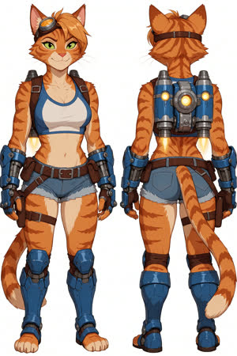
Почти не отличается от базы: тени чуть мягче, лицо круглее. Без слов о стиле в промпте лора почти не действует.
Character design sheet of an adult anthropomorphic orange tabby cat woman, a jetpack mechanic, full body front view and back view side by side. Orange fur with darker tiger stripes, cream chest and muzzle, green eyes, confident smirk, aviator goggles on her head. Athletic curvy build. Blue and white crop top with brown leather harness straps, denim blue short shorts with a brown utility belt and pouches, twin blue-and-silver jetpack thrusters with glowing yellow lights on her back, oversized blue mechanical gauntlets, armored blue knee-high boots with digitigrade paws, long striped tail with a cream tip. Plain white background, even studio lighting.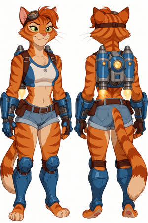
Добавил «Disney 2D animation style»: стиль Disney читается сразу (Робин Гуд, Зверополис), выразительное лицо. На виде сзади у сапог пропала подошва.
Disney 2D animation style, hand-drawn animated feature film look. Character design sheet of an adult anthropomorphic orange tabby cat woman, a jetpack mechanic, full body front view and back view side by side. Orange fur with darker tiger stripes, cream chest and muzzle, green eyes, confident smirk, aviator goggles on her head. Athletic curvy build. Blue and white crop top with brown leather harness straps, denim blue short shorts with a brown utility belt and pouches, twin blue-and-silver jetpack thrusters with glowing yellow lights on her back, oversized blue mechanical gauntlets, armored blue knee-high boots with digitigrade paws, long striped tail with a cream tip. Plain white background, even studio lighting.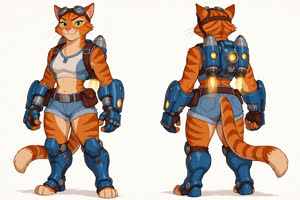
Горизонтальный кадр 1536×1024 сплющил фигуры: короткие ноги. Вернулся к вертикальному.
Disney 2D animation style, hand-drawn animated feature film look, model sheet. Character design sheet of an adult anthropomorphic orange tabby cat woman, a jetpack mechanic, full body front view and back view side by side. Orange fur with darker tiger stripes, cream chest and muzzle, green eyes, confident smirk, aviator goggles on her head. Athletic curvy build. Blue and white crop top with brown leather harness straps, denim blue short shorts with a brown utility belt and pouches, twin blue-and-silver jetpack thrusters with glowing yellow lights on her back, oversized blue mechanical gauntlets, armored blue knee-high boots with digitigrade paws, long striped tail with a cream tip. Plain white background, even studio lighting. Both views show the identical outfit; the boots fully cover the feet in both views; the tail grows from the base of the spine above the shorts.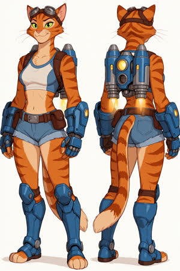
Аккуратный model sheet: крупные механические перчатки как на референсе, сапоги одинаковые на обоих видах. Лицо немного вытянутое.
Disney 2D animation style, hand-drawn animated feature film look, model sheet. Character design sheet of an adult anthropomorphic orange tabby cat woman, a jetpack mechanic, full body front view and back view side by side. Orange fur with darker tiger stripes, cream chest and muzzle, green eyes, confident smirk, aviator goggles on her head. Athletic curvy build. Blue and white crop top with brown leather harness straps, denim blue short shorts with a brown utility belt and pouches, twin blue-and-silver jetpack thrusters with glowing yellow lights on her back, oversized blue mechanical gauntlets, armored blue knee-high boots with digitigrade paws, long striped tail with a cream tip. Plain white background, even studio lighting. Both views show the identical outfit; the boots fully cover the feet in both views; the tail grows from the base of the spine above the shorts. Long legs, tall heroic proportions.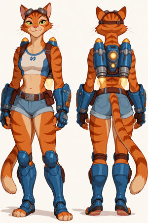
Сила 1.2: стабильно, 2D-стиль сильнее, лицо милое. Выхлоп джетпака похож на лампы на плечах.
Disney 2D animation style, hand-drawn animated feature film look, model sheet. Character design sheet of an adult anthropomorphic orange tabby cat woman, a jetpack mechanic, full body front view and back view side by side. Orange fur with darker tiger stripes, cream chest and muzzle, green eyes, confident smirk, aviator goggles on her head. Athletic curvy build. Blue and white crop top with brown leather harness straps, denim blue short shorts with a brown utility belt and pouches, twin blue-and-silver jetpack thrusters with glowing yellow lights on her back, oversized blue mechanical gauntlets, armored blue knee-high boots with digitigrade paws, long striped tail with a cream tip. Plain white background, even studio lighting. Both views show the identical outfit; the boots fully cover the feet in both views; the tail grows from the base of the spine above the shorts. Long legs, tall heroic proportions.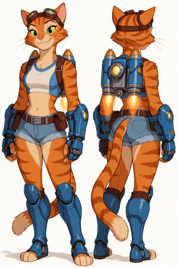
Лучшее лицо в серии, очень диснеевское. Вид сзади повернулся в три четверти.
Disney 2D animation style, hand-drawn animated feature film look, model sheet. Character design sheet of an adult anthropomorphic orange tabby cat woman, a jetpack mechanic, full body front view and back view side by side. Orange fur with darker tiger stripes, cream chest and muzzle, green eyes, confident smirk, aviator goggles on her head. Athletic curvy build. Blue and white crop top with brown leather harness straps, denim blue short shorts with a brown utility belt and pouches, twin blue-and-silver jetpack thrusters with glowing yellow lights on her back, oversized blue mechanical gauntlets, armored blue knee-high boots with digitigrade paws, long striped tail with a cream tip. Plain white background, even studio lighting. Both views show the identical outfit; the boots fully cover the feet in both views; the tail grows from the base of the spine above the shorts. Long legs, tall heroic proportions. Big expressive almond eyes, short cute muzzle, playful confident smirk, slightly tilted head.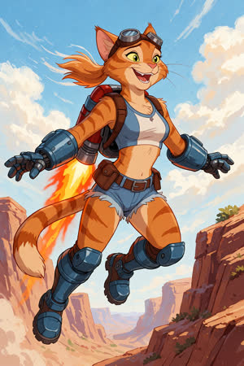
Кадр как из полнометражного мультфильма: рисованный фон, радость на лице. Ошибки: джетпак стал красным, очки остались на лбу.
Disney 2D animation style, hand-drawn animated feature film still. An adult anthropomorphic orange tabby cat woman jetpack mechanic flying over a sunny canyon, jetpack thrusters blasting flames, arms spread, grinning, aviator goggles over her eyes, wind in her fur. Blue and white crop top with brown leather harness, denim short shorts with utility belt, oversized blue mechanical gauntlets, armored blue boots, long striped tail. Dynamic low-angle shot, vivid colours, painted background.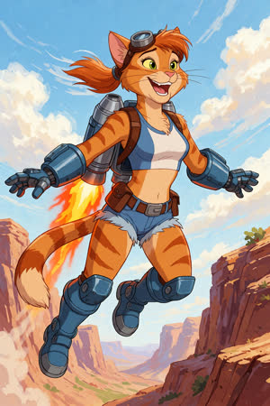
Сила 0.6: стиль держится. Джетпак серебристый.
Disney 2D animation style, hand-drawn animated feature film still. An adult anthropomorphic orange tabby cat woman jetpack mechanic flying over a sunny canyon, her blue-and-silver twin-thruster jetpack blasting flames, arms spread, grinning, aviator goggles on her forehead, wind in her fur. Blue and white crop top with brown leather harness, denim short shorts with utility belt, oversized blue mechanical gauntlets, armored blue boots, long striped tail. Dynamic low-angle shot, vivid colours, painted background.Самый чистый лист персонажа: без человеческих волос, строгий вид спереди и сзади, всё снаряжение одинаково на обоих видах. ЛУЧШАЯ (Disney).
Disney 2D animation style, hand-drawn animated feature film look, model sheet. Character design sheet of an adult anthropomorphic orange tabby cat woman, a jetpack mechanic, full body front view and back view side by side. Orange fur with darker tiger stripes, cream chest and muzzle, green eyes, confident smirk, aviator goggles on her head. Athletic curvy build. Blue and white crop top with brown leather harness straps, denim blue short shorts with a brown utility belt and pouches, twin blue-and-silver jetpack thrusters with glowing yellow lights on her back, oversized blue mechanical gauntlets, armored blue knee-high boots with digitigrade paws, long striped tail with a cream tip. Plain white background, even studio lighting. Both views show the identical outfit; the boots fully cover the feet in both views; the tail grows from the base of the spine above the shorts. Long legs, tall heroic proportions. Big expressive almond eyes, short cute muzzle, playful confident smirk. Short fluffy cheek fur instead of human hair.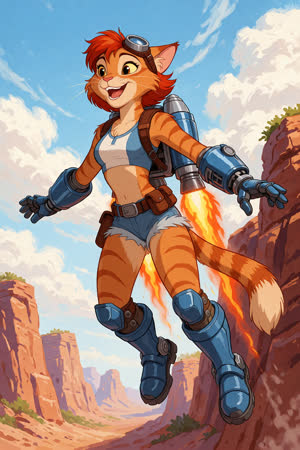
Хороший динамичный кадр, синий джетпак, ноги раздельно. Вернулись человеческие волосы: их провоцируют слова «ветер в шерсти».
Disney 2D animation style, hand-drawn animated feature film still. An adult anthropomorphic orange tabby cat woman jetpack mechanic flying over a sunny canyon, her blue-and-silver twin-thruster jetpack blasting flames, arms spread, grinning, aviator goggles on her forehead, wind in her fur. Blue and white crop top with brown leather harness, denim short shorts with utility belt, oversized blue mechanical gauntlets, armored blue boots, long striped tail. Dynamic low-angle shot, vivid colours, painted background. Short fluffy cheek fur instead of human hair, big expressive almond eyes. Long legs, both boots clearly separated.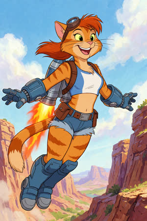
Контроль без лоры, промпт как у D08: мультсериал 90-х, человеческие рыжие волосы, короче ноги, сапоги слиплись. С лорой рендер чище и анатомия лучше.
Disney 2D animation style, hand-drawn animated feature film still. An adult anthropomorphic orange tabby cat woman jetpack mechanic flying over a sunny canyon, her blue-and-silver twin-thruster jetpack blasting flames, arms spread, grinning, aviator goggles on her forehead, wind in her fur. Blue and white crop top with brown leather harness, denim short shorts with utility belt, oversized blue mechanical gauntlets, armored blue boots, long striped tail. Dynamic low-angle shot, vivid colours, painted background.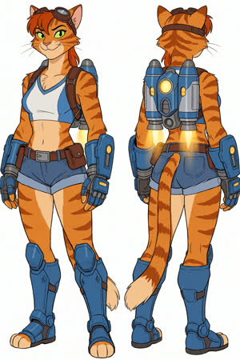
Контроль без лоры, промпт как у D04: плоская комиксная линия, человеческая причёска, жёсткие глаза.
Disney 2D animation style, hand-drawn animated feature film look, model sheet. Character design sheet of an adult anthropomorphic orange tabby cat woman, a jetpack mechanic, full body front view and back view side by side. Orange fur with darker tiger stripes, cream chest and muzzle, green eyes, confident smirk, aviator goggles on her head. Athletic curvy build. Blue and white crop top with brown leather harness straps, denim blue short shorts with a brown utility belt and pouches, twin blue-and-silver jetpack thrusters with glowing yellow lights on her back, oversized blue mechanical gauntlets, armored blue knee-high boots with digitigrade paws, long striped tail with a cream tip. Plain white background, even studio lighting. Both views show the identical outfit; the boots fully cover the feet in both views; the tail grows from the base of the spine above the shorts. Long legs, tall heroic proportions.Триггер 3dpixar, оптимум 0.9–1.0. На 1.25 возвращаются человеческие чёлки. База сама по себе неплохо делает Pixar-подобное 3D, а лора добавляет обаяние, стройные пропорции, правильные руки в перчатках и мягкий киносвет. Лучшие: P10, портрет P06, листы P03 и P08.
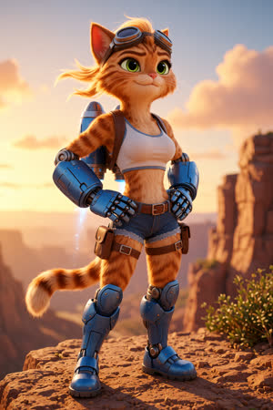
Герой на скале в закатном свете: перчатки наконец стали полноценными руками-роботами, наколенники на месте, лицо обаятельное. ЛУЧШАЯ (Pixar).
3dpixar, Pixar 3D animated feature film still. An adult anthropomorphic orange tabby cat woman jetpack mechanic standing proudly on a rocky cliff edge at golden hour, hands on hips, confident smirk, aviator goggles on her forehead, wind ruffling her fur. Real tabby cat head with no human hair. Her hands are completely encased in oversized chunky blue robotic gauntlets with metal fingers. Blue and white crop top with brown leather harness, denim short shorts with utility belt and pouches, blue-and-silver twin-thruster jetpack on her back, armored blue knee-high boots with knee pads, long striped tail. Full body, low angle, canyon panorama behind her.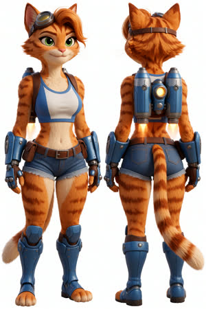
Сразу полноценный 3D-рендер в духе Pixar с детальной шерстью. Есть клок человеческих волос, перчатки меньше, чем на референсе.
3dpixar, Character design sheet of an adult anthropomorphic orange tabby cat woman, a jetpack mechanic, full body front view and back view side by side. Orange fur with darker tiger stripes, cream chest and muzzle, green eyes, confident smirk, aviator goggles on her head. Athletic curvy build. Blue and white crop top with brown leather harness straps, denim blue short shorts with a brown utility belt and pouches, twin blue-and-silver jetpack thrusters with glowing yellow lights on her back, oversized blue mechanical gauntlets, armored blue knee-high boots with digitigrade paws, long striped tail with a cream tip. Plain white background, even studio lighting.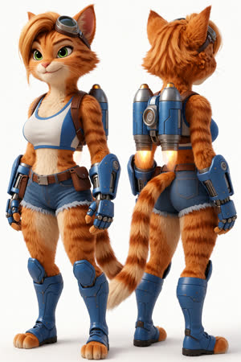
Перчатки крупные, как на референсе, шерсть отличная. Остались светлые чёлки, вид сзади ушёл в три четверти.
3dpixar, Pixar 3D animated feature film render, soft global illumination, detailed fluffy fur. Character design sheet of an adult anthropomorphic orange tabby cat woman, a jetpack mechanic, full body front view and back view side by side. Orange fur with darker tiger stripes, cream chest and muzzle, green eyes, confident smirk, aviator goggles on her head. Athletic curvy build. Blue and white crop top with brown leather harness straps, denim blue short shorts with a brown utility belt and pouches, twin blue-and-silver jetpack thrusters with glowing yellow lights on her back, oversized blue mechanical gauntlets, armored blue knee-high boots with digitigrade paws, long striped tail with a cream tip. Plain white background, even studio lighting. Short fluffy cheek fur instead of human hair. Oversized chunky blue mechanical gauntlets covering the forearms and hands. Both views show the identical outfit.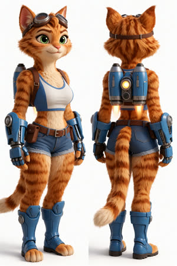
Волосы убраны, строгий вид сзади, очень кошачья голова. Пропали наколенники.
3dpixar, Pixar 3D animated feature film render, soft global illumination, detailed fluffy fur. Character design sheet of an adult anthropomorphic orange tabby cat woman, a jetpack mechanic, full body front view and back view side by side. Orange fur with darker tiger stripes, cream chest and muzzle, green eyes, confident smirk, aviator goggles on her head. Athletic curvy build. Blue and white crop top with brown leather harness straps, denim blue short shorts with a brown utility belt and pouches, twin blue-and-silver jetpack thrusters with glowing yellow lights on her back, oversized blue mechanical gauntlets, armored blue knee-high boots with digitigrade paws, long striped tail with a cream tip. Plain white background, even studio lighting. Real tabby cat head with no human hair and no bangs, only short fur and cheek tufts. Oversized chunky blue mechanical gauntlets covering the forearms and hands. Strict orthographic turnaround: left figure faces the viewer, right figure shows her back, both standing straight in the same neutral pose, identical outfit.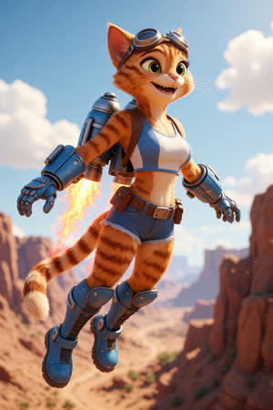
Кадр уровня кино: глубина резкости, боке, без волос. Пропорции уходят в «милые», ноги короче.
3dpixar, Pixar 3D animated feature film still, cinematic lighting. An adult anthropomorphic orange tabby cat woman jetpack mechanic flying over a sunny canyon, her blue-and-silver twin-thruster jetpack blasting flames, arms spread, grinning, aviator goggles on her forehead. Real tabby cat head with no human hair, only short fur and cheek tufts. Blue and white crop top with brown leather harness, denim short shorts with utility belt, oversized chunky blue mechanical gauntlets, armored blue knee-high boots, long striped tail. Dynamic low-angle shot, vivid colours, detailed background.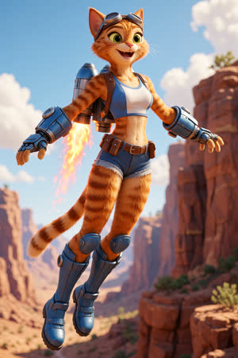
Сила 0.75: ноги исправлены, но тонковаты, лапа торчит из перчатки.
3dpixar, Pixar 3D animated feature film still, cinematic lighting. An adult anthropomorphic orange tabby cat woman jetpack mechanic flying over a sunny canyon, her blue-and-silver twin-thruster jetpack blasting flames, arms spread, grinning, aviator goggles on her forehead. Real tabby cat head with no human hair, only short fur and cheek tufts. Blue and white crop top with brown leather harness, denim short shorts with utility belt, oversized chunky blue mechanical gauntlets, armored blue knee-high boots, long striped tail. Dynamic low-angle shot, vivid colours, detailed background. Long slender legs, heroic proportions, each boot clearly separate.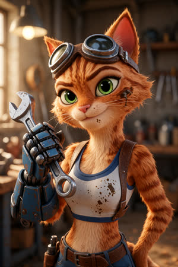
Отличный портрет: большие глаза, шерсть, контровой свет. Ручка ключа странно проходит сквозь перчатку.
3dpixar, Pixar 3D animated feature film still. Close-up portrait of an adult anthropomorphic orange tabby cat woman mechanic in a cluttered workshop, aviator goggles pushed up on her forehead, smudge of oil on her cheek, confident smirk, green eyes, one oversized blue mechanical gauntlet raised holding a wrench near her face. Real tabby cat head with no human hair, only short fur and cheek tufts. Blue and white crop top with brown leather harness straps. Warm rim light, shallow depth of field.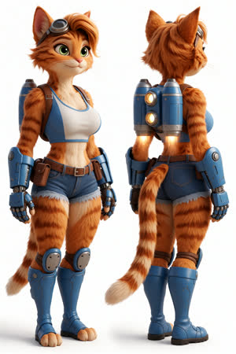
Сила 1.25, перебор: вернулись человеческие чёлки, вид сзади снова повёрнут. Верхний предел около 1.0.
3dpixar, Pixar 3D animated feature film render, soft global illumination, detailed fluffy fur. Character design sheet of an adult anthropomorphic orange tabby cat woman, a jetpack mechanic, full body front view and back view side by side. Orange fur with darker tiger stripes, cream chest and muzzle, green eyes, confident smirk, aviator goggles on her head. Athletic curvy build. Blue and white crop top with brown leather harness straps, denim blue short shorts with a brown utility belt and pouches, twin blue-and-silver jetpack thrusters with glowing yellow lights on her back, oversized blue mechanical gauntlets, armored blue knee-high boots with digitigrade paws, long striped tail with a cream tip. Plain white background, even studio lighting. Real tabby cat head with no human hair and no bangs, only short fur and cheek tufts. Oversized chunky blue mechanical gauntlets covering the forearms and hands. Strict orthographic turnaround: left figure faces the viewer, right figure shows her back, both standing straight in the same neutral pose, identical outfit. Knee pads on the boots.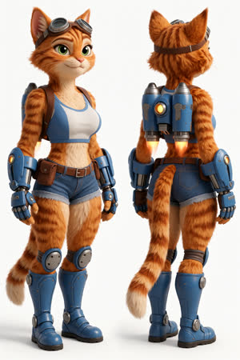
Самый полный костюм: наколенники, сапоги, перчатки, джетпак, без волос. Вместе с P03 лучший лист персонажа Pixar.
3dpixar, Pixar 3D animated feature film render, soft global illumination, detailed fluffy fur. Character design sheet of an adult anthropomorphic orange tabby cat woman, a jetpack mechanic, full body front view and back view side by side. Orange fur with darker tiger stripes, cream chest and muzzle, green eyes, confident smirk, aviator goggles on her head. Athletic curvy build. Blue and white crop top with brown leather harness straps, denim blue short shorts with a brown utility belt and pouches, twin blue-and-silver jetpack thrusters with glowing yellow lights on her back, oversized blue mechanical gauntlets, armored blue knee-high boots with digitigrade paws, long striped tail with a cream tip. Plain white background, even studio lighting. Real tabby cat head with no human hair and no bangs, only short fur and cheek tufts. Oversized chunky blue mechanical gauntlets covering the forearms and hands. Strict orthographic turnaround: left figure faces the viewer, right figure shows her back, both standing straight in the same neutral pose, identical outfit. Knee pads on the boots.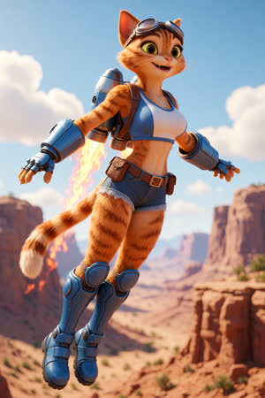
Пропорции сбалансированы, но пальцы всё равно торчат из перчаток.
3dpixar, Pixar 3D animated feature film still, cinematic lighting. An adult anthropomorphic orange tabby cat woman jetpack mechanic flying over a sunny canyon, her blue-and-silver twin-thruster jetpack blasting flames, arms spread, grinning, aviator goggles on her forehead. Real tabby cat head with no human hair, only short fur and cheek tufts. Blue and white crop top with brown leather harness, denim short shorts with utility belt, oversized chunky blue mechanical gauntlets, armored blue knee-high boots, long striped tail. Dynamic low-angle shot, vivid colours, detailed background. Athletic adult proportions with long legs, each boot clearly separate, paws fully inside the gauntlets.Герой на скале в закатном свете: перчатки наконец стали полноценными руками-роботами, наколенники на месте, лицо обаятельное. ЛУЧШАЯ (Pixar).
3dpixar, Pixar 3D animated feature film still. An adult anthropomorphic orange tabby cat woman jetpack mechanic standing proudly on a rocky cliff edge at golden hour, hands on hips, confident smirk, aviator goggles on her forehead, wind ruffling her fur. Real tabby cat head with no human hair. Her hands are completely encased in oversized chunky blue robotic gauntlets with metal fingers. Blue and white crop top with brown leather harness, denim short shorts with utility belt and pouches, blue-and-silver twin-thruster jetpack on her back, armored blue knee-high boots with knee pads, long striped tail. Full body, low angle, canyon panorama behind her.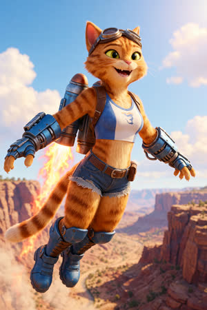
Контроль: база и без лоры делает похожий 3D-кадр. Но перчатки превращаются в манжеты с голыми лапами, ноги сливаются, на топе случайный логотип.
3dpixar, Pixar 3D animated feature film still, cinematic lighting. An adult anthropomorphic orange tabby cat woman jetpack mechanic flying over a sunny canyon, her blue-and-silver twin-thruster jetpack blasting flames, arms spread, grinning, aviator goggles on her forehead. Real tabby cat head with no human hair, only short fur and cheek tufts. Blue and white crop top with brown leather harness, denim short shorts with utility belt, oversized chunky blue mechanical gauntlets, armored blue knee-high boots, long striped tail. Dynamic low-angle shot, vivid colours, detailed background.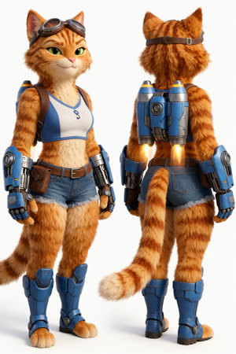
Контроль: плюшевая шерсть, коренастое тело, плоское лицо. Лора добавляет обаяние Pixar и стройность.
3dpixar, Pixar 3D animated feature film render, soft global illumination, detailed fluffy fur. Character design sheet of an adult anthropomorphic orange tabby cat woman, a jetpack mechanic, full body front view and back view side by side. Orange fur with darker tiger stripes, cream chest and muzzle, green eyes, confident smirk, aviator goggles on her head. Athletic curvy build. Blue and white crop top with brown leather harness straps, denim blue short shorts with a brown utility belt and pouches, twin blue-and-silver jetpack thrusters with glowing yellow lights on her back, oversized blue mechanical gauntlets, armored blue knee-high boots with digitigrade paws, long striped tail with a cream tip. Plain white background, even studio lighting. Real tabby cat head with no human hair and no bangs, only short fur and cheek tufts. Oversized chunky blue mechanical gauntlets covering the forearms and hands. Strict orthographic turnaround: left figure faces the viewer, right figure shows her back, both standing straight in the same neutral pose, identical outfit.Сильный узнаваемый стиль иллюстратора: скетчевая линия, тёплая палитра. Но лора навязывает свои привычки: ошейник, логотип на груди, человеческие волосы, открытые пятки, выцветший мех, а на 1.0 рисует два хвоста. Для листов персонажа контроль без лоры точнее. Если использовать, то 0.7–0.8 для портретов и сцен. Объекты, которых не должно быть, описывать позитивно («bare fluffy neck»): при cfg 1 негативный промпт не работает.
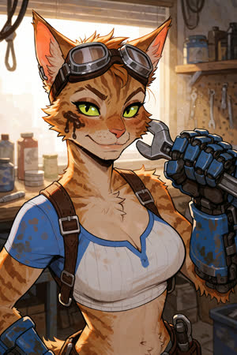
Сильнейший кадр Incase: богатая детализация, правдоподобный хват ключа, хитрое лицо. ЛУЧШАЯ (Incase).
Close-up portrait illustration of an adult anthropomorphic orange tabby cat woman mechanic in a cluttered workshop, aviator goggles pushed up on her forehead, smudge of oil on her cheek, confident smirk, vivid green eyes, one oversized blue mechanical gauntlet raised holding a wrench near her face. Real tabby cat head with only short fur and cheek tufts, bare fluffy neck. Blue and white crop top with brown leather harness straps. Warm rim light.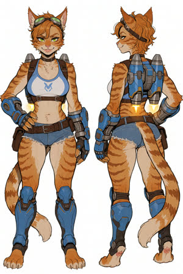
Авторский стиль виден сразу: скетчевая тушь, тёплая приглушённая палитра. Сама добавляет ошейник, логотип, человеческие кудри и открытые сапоги.
Character design sheet of an adult anthropomorphic orange tabby cat woman, a jetpack mechanic, full body front view and back view side by side. Orange fur with darker tiger stripes, cream chest and muzzle, green eyes, confident smirk, aviator goggles on her head. Athletic curvy build. Blue and white crop top with brown leather harness straps, denim blue short shorts with a brown utility belt and pouches, twin blue-and-silver jetpack thrusters with glowing yellow lights on her back, oversized blue mechanical gauntlets, armored blue knee-high boots with digitigrade paws, long striped tail with a cream tip. Plain white background, even studio lighting.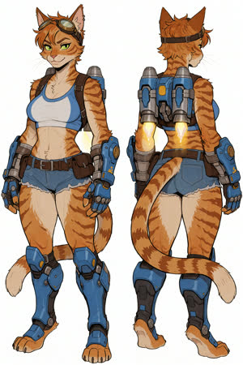
Сила 0.8 и строгий промпт: ошейник и логотип ушли, вид сзади правильный. Остались клок волос и открытые пятки.
Character design sheet of an adult anthropomorphic orange tabby cat woman, a jetpack mechanic, full body front view and back view side by side. Orange fur with darker tiger stripes, cream chest and muzzle, green eyes, confident smirk, aviator goggles on her head. Athletic curvy build. Blue and white crop top with brown leather harness straps, denim blue short shorts with a brown utility belt and pouches, twin blue-and-silver jetpack thrusters with glowing yellow lights on her back, oversized blue mechanical gauntlets, armored blue knee-high boots with digitigrade paws, long striped tail with a cream tip. Plain white background, even studio lighting. Real tabby cat head with no human hair, only short fur and cheek tufts. Strict turnaround: left figure faces the viewer, right figure shows her back, both standing straight in the same neutral pose, identical outfit; enclosed armored boots covering the feet in both views.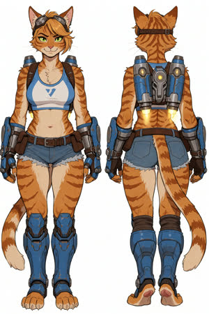
Даже на 0.6 лора навязывает свои привычки (чёлка, логотип, открытые пятки), а стиль уже слабее.
Character design sheet of an adult anthropomorphic orange tabby cat woman, a jetpack mechanic, full body front view and back view side by side. Orange fur with darker tiger stripes, cream chest and muzzle, green eyes, confident smirk, aviator goggles on her head. Athletic curvy build. Blue and white crop top with brown leather harness straps, denim blue short shorts with a brown utility belt and pouches, twin blue-and-silver jetpack thrusters with glowing yellow lights on her back, oversized blue mechanical gauntlets, armored blue knee-high boots with digitigrade paws, long striped tail with a cream tip. Plain white background, even studio lighting. Real tabby cat head with no human hair, only short fur and cheek tufts. Strict turnaround: left figure faces the viewer, right figure shows her back, both standing straight in the same neutral pose, identical outfit; enclosed armored boots covering the feet in both views.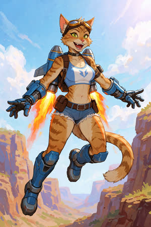
Энергичная иллюстрация, но снова ошейник, логотип и рыжий мех выцвел в бежевый.
Dynamic illustration. An adult anthropomorphic orange tabby cat woman jetpack mechanic flying over a sunny canyon, her blue-and-silver twin-thruster jetpack blasting flames, arms spread, grinning, aviator goggles on her forehead. Real tabby cat head with no human hair, only short fur and cheek tufts. Blue and white crop top with brown leather harness, denim short shorts with utility belt, oversized blue mechanical gauntlets, enclosed armored blue knee-high boots, long striped tail. Dynamic low-angle shot, vivid colours, painted background.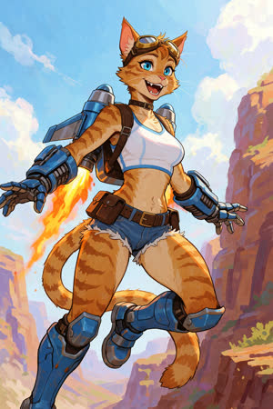
Логотип ушёл, ошейник остался: слово «collar» даже с отрицанием рисует ошейник, потому что при cfg 1 негатив не работает.
Dynamic illustration. An adult anthropomorphic orange tabby cat woman jetpack mechanic flying over a sunny canyon, her blue-and-silver twin-thruster jetpack blasting flames, arms spread, grinning, aviator goggles on her forehead. Real tabby cat head with no human hair, only short fur and cheek tufts. Blue and white crop top with brown leather harness, denim short shorts with utility belt, oversized blue mechanical gauntlets, enclosed armored blue knee-high boots, long striped tail. Dynamic low-angle shot, vivid colours, painted background. Bright saturated orange fur. Plain crop top with no logo, no collar or choker on her neck.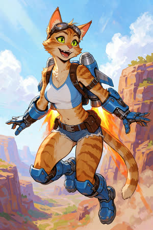
Сформулировал позитивно («bare fluffy neck»): ошейник исчез, глаза зелёные, живое движение. Лучшая сцена Incase.
Dynamic illustration. An adult anthropomorphic orange tabby cat woman jetpack mechanic flying over a sunny canyon, her blue-and-silver twin-thruster jetpack blasting flames, arms spread, grinning, aviator goggles on her forehead. Real tabby cat head with no human hair, only short fur and cheek tufts. Blue and white crop top with brown leather harness, denim short shorts with utility belt, oversized blue mechanical gauntlets, enclosed armored blue knee-high boots, long striped tail. Dynamic low-angle shot, vivid colours, painted background. Bright saturated orange fur, vivid green eyes, bare fluffy neck, plain white and blue crop top.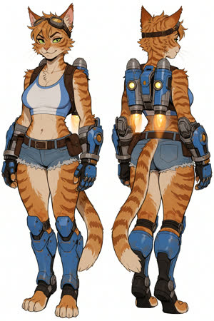
Лист персонажа без ошейника и логотипа, сзади сапоги закрытые. Спереди пальцы ног всё ещё голые.
Character design sheet of an adult anthropomorphic orange tabby cat woman, a jetpack mechanic, full body front view and back view side by side. Orange fur with darker tiger stripes, cream chest and muzzle, green eyes, confident smirk, aviator goggles on her head. Athletic curvy build. Blue and white crop top with brown leather harness straps, denim blue short shorts with a brown utility belt and pouches, twin blue-and-silver jetpack thrusters with glowing yellow lights on her back, oversized blue mechanical gauntlets, armored blue knee-high boots with digitigrade paws, long striped tail with a cream tip. Plain white background, even studio lighting. Real tabby cat head with only short fur and cheek tufts, bare fluffy neck, plain white and blue crop top. Strict turnaround: left figure faces the viewer, right figure shows her back, both standing straight in the same neutral pose, identical outfit. Armored boots with solid black rubber soles and closed heels.Сильнейший кадр Incase: богатая детализация, правдоподобный хват ключа, хитрое лицо. ЛУЧШАЯ (Incase).
Close-up portrait illustration of an adult anthropomorphic orange tabby cat woman mechanic in a cluttered workshop, aviator goggles pushed up on her forehead, smudge of oil on her cheek, confident smirk, vivid green eyes, one oversized blue mechanical gauntlet raised holding a wrench near her face. Real tabby cat head with only short fur and cheek tufts, bare fluffy neck. Blue and white crop top with brown leather harness straps. Warm rim light.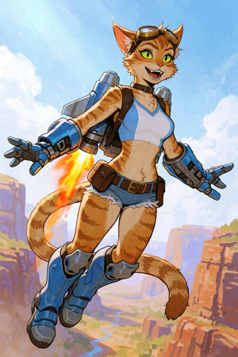
Сила 1.0, перебор: вернулся ошейник, появились ДВА хвоста. Предел около 0.8.
Dynamic illustration. An adult anthropomorphic orange tabby cat woman jetpack mechanic flying over a sunny canyon, her blue-and-silver twin-thruster jetpack blasting flames, arms spread, grinning, aviator goggles on her forehead. Real tabby cat head with no human hair, only short fur and cheek tufts. Blue and white crop top with brown leather harness, denim short shorts with utility belt, oversized blue mechanical gauntlets, enclosed armored blue knee-high boots, long striped tail. Dynamic low-angle shot, vivid colours, painted background. Bright saturated orange fur, vivid green eyes, bare fluffy neck, plain white and blue crop top.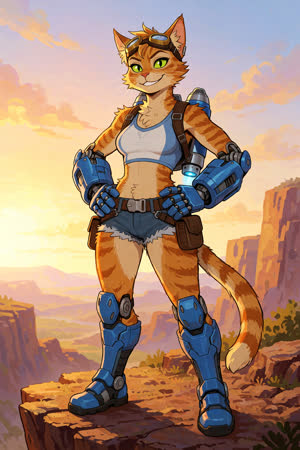
Сила 0.7: чисто и точно, но стиль мягче. Второе место после I08.
Illustration. An adult anthropomorphic orange tabby cat woman jetpack mechanic standing proudly on a rocky cliff edge at golden hour, hands on hips, confident smirk, vivid green eyes, aviator goggles on her forehead. Real tabby cat head with only short fur and cheek tufts, bare fluffy neck, bright saturated orange fur. Her hands are completely encased in oversized chunky blue robotic gauntlets with metal fingers. Plain white and blue crop top with brown leather harness, denim short shorts with utility belt and pouches, blue-and-silver twin-thruster jetpack on her back, armored blue knee-high boots with knee pads, one long striped tail. Full body, low angle, canyon panorama behind her.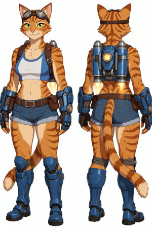
Контроль ТОЧНЕЕ: без волос, сапоги закрытые, идеальный вид сзади. Incase платит точностью за свой стиль.
Character design sheet of an adult anthropomorphic orange tabby cat woman, a jetpack mechanic, full body front view and back view side by side. Orange fur with darker tiger stripes, cream chest and muzzle, green eyes, confident smirk, aviator goggles on her head. Athletic curvy build. Blue and white crop top with brown leather harness straps, denim blue short shorts with a brown utility belt and pouches, twin blue-and-silver jetpack thrusters with glowing yellow lights on her back, oversized blue mechanical gauntlets, armored blue knee-high boots with digitigrade paws, long striped tail with a cream tip. Plain white background, even studio lighting. Real tabby cat head with no human hair, only short fur and cheek tufts. Strict turnaround: left figure faces the viewer, right figure shows her back, both standing straight in the same neutral pose, identical outfit; enclosed armored boots covering the feet in both views.На одетом персонаже практически ничего не даёт. До 1.0 картинки почти совпадают с контролем без лоры, причём контроль иногда даже лучше. От 1.2 слегка толкает к фотореализму, увеличивает грудь и бёдра, иногда добавляет ошейник. На 1.6 ничего не ломается, но и пользы нет. Похоже, лора обучена на NSFW-телах; для обычных SFW-задач её можно не подключать.
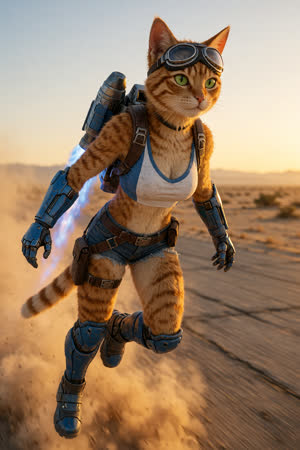
Сила 0.6: отличный динамичный фотореалистичный пролёт над аэродромом. ЛУЧШАЯ (KNP), но контроль, судя по K04 и C_real, был бы почти таким же.
KNP, cinematic film photograph, realistic CGI. An adult anthropomorphic orange tabby cat woman jetpack mechanic flying low over a desert airfield at sunset, jetpack thrusters firing blue flames, dust kicked up below, determined expression, vivid green eyes, aviator goggles over her eyes, real tabby cat head with short fur, blue and white crop top with brown leather harness, denim shorts with utility belt, blue robotic gauntlets, armored blue boots, long striped tail streaming behind. Full body, motion blur on background, 50mm lens.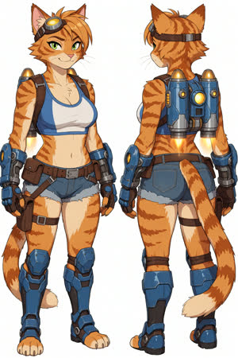
KNP 0.8: почти как база без лоры. Бёдра шире, тени чуть богаче.
KNP, Character design sheet of an adult anthropomorphic orange tabby cat woman, a jetpack mechanic, full body front view and back view side by side. Orange fur with darker tiger stripes, cream chest and muzzle, green eyes, confident smirk, aviator goggles on her head. Athletic curvy build. Blue and white crop top with brown leather harness straps, denim blue short shorts with a brown utility belt and pouches, twin blue-and-silver jetpack thrusters with glowing yellow lights on her back, oversized blue mechanical gauntlets, armored blue knee-high boots with digitigrade paws, long striped tail with a cream tip. Plain white background, even studio lighting.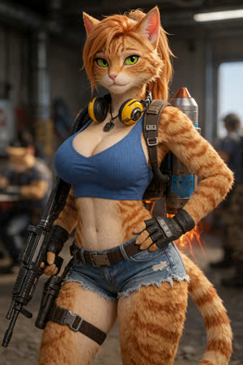
Минимальный промпт: полуреалистичный 3D, милитари-антураж, грудь больше.
KNP, an adult anthropomorphic orange tabby cat woman jetpack mechanic in a blue crop top and denim shorts.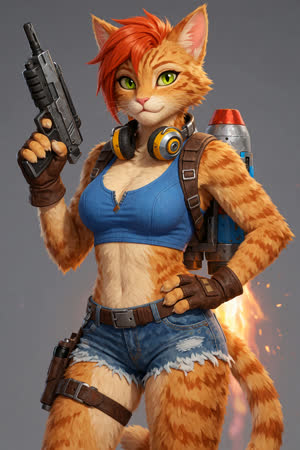
Контроль без лоры: та же идея, но рисованный вид. Значит, KNP толкает к фотореализму и увеличивает грудь.
KNP, an adult anthropomorphic orange tabby cat woman jetpack mechanic in a blue crop top and denim shorts.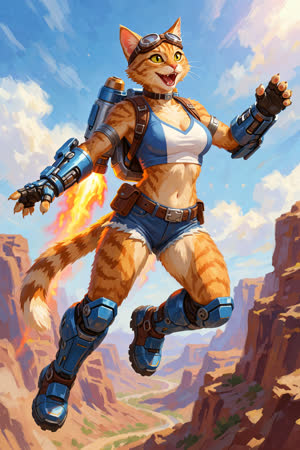
Стилизованная сцена: мазки как маслом, ошейник, пальцы торчат.
KNP, Dynamic illustration. An adult anthropomorphic orange tabby cat woman jetpack mechanic flying over a sunny canyon, her blue-and-silver twin-thruster jetpack blasting flames, arms spread, grinning, aviator goggles on her forehead. Real tabby cat head with no human hair, only short fur and cheek tufts. Blue and white crop top with brown leather harness, denim short shorts with utility belt, oversized blue mechanical gauntlets, enclosed armored blue knee-high boots, long striped tail. Dynamic low-angle shot, vivid colours, painted background.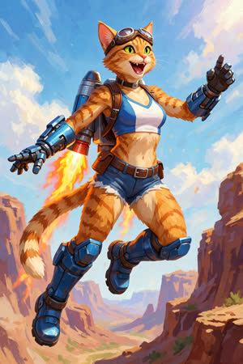
Контроль без лоры практически такой же, а руки-роботы даже лучше. В стилизованных промптах KNP ничего не даёт или слегка мешает.
KNP, Dynamic illustration. An adult anthropomorphic orange tabby cat woman jetpack mechanic flying over a sunny canyon, her blue-and-silver twin-thruster jetpack blasting flames, arms spread, grinning, aviator goggles on her forehead. Real tabby cat head with no human hair, only short fur and cheek tufts. Blue and white crop top with brown leather harness, denim short shorts with utility belt, oversized blue mechanical gauntlets, enclosed armored blue knee-high boots, long striped tail. Dynamic low-angle shot, vivid colours, painted background.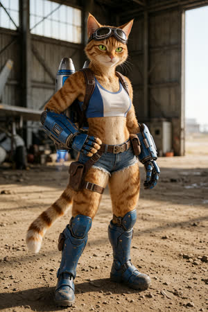
Фотореалистичный ангар: убедительно, но пропорции слегка странные.
KNP, cinematic film photograph, realistic CGI. An adult anthropomorphic orange tabby cat woman jetpack mechanic standing in a dusty aircraft hangar, confident smirk, vivid green eyes, aviator goggles on her forehead. Real tabby cat head with only short fur and cheek tufts. Blue and white crop top with brown leather harness, denim short shorts with utility belt and pouches, blue-and-silver twin-thruster jetpack on her back, oversized blue robotic gauntlets, armored blue knee-high boots, long striped tail. Full body, 35mm lens, natural window light.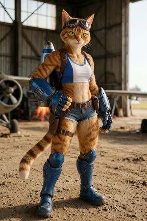
Контроль без лоры почти неотличим, фон даже богаче (самолёты, выхлоп).
KNP, cinematic film photograph, realistic CGI. An adult anthropomorphic orange tabby cat woman jetpack mechanic standing in a dusty aircraft hangar, confident smirk, vivid green eyes, aviator goggles on her forehead. Real tabby cat head with only short fur and cheek tufts. Blue and white crop top with brown leather harness, denim short shorts with utility belt and pouches, blue-and-silver twin-thruster jetpack on her back, oversized blue robotic gauntlets, armored blue knee-high boots, long striped tail. Full body, 35mm lens, natural window light.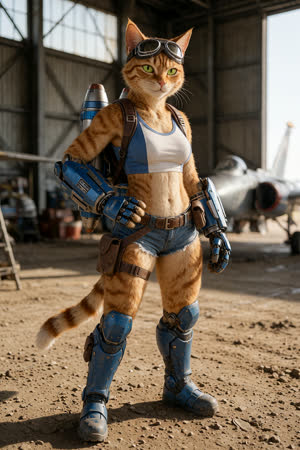
Сила 1.3: эффект появляется: фотографичнее мех и свет, тоньше талия. Заметен только от 1.2.
KNP, cinematic film photograph, realistic CGI. An adult anthropomorphic orange tabby cat woman jetpack mechanic standing in a dusty aircraft hangar, confident smirk, vivid green eyes, aviator goggles on her forehead. Real tabby cat head with only short fur and cheek tufts. Blue and white crop top with brown leather harness, denim short shorts with utility belt and pouches, blue-and-silver twin-thruster jetpack on her back, oversized blue robotic gauntlets, armored blue knee-high boots, long striped tail. Full body, 35mm lens, natural window light.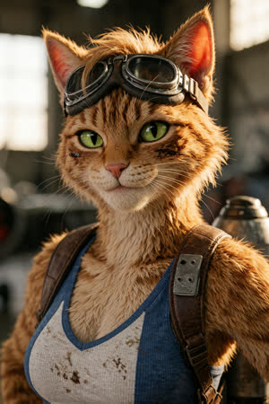
Портрет на 1.2: фотореализм, мех чуть свалявшийся, грязь на щеке нарисована как пятно у глаза.
KNP, cinematic film photograph, realistic CGI. Close-up portrait of an adult anthropomorphic orange tabby cat woman jetpack mechanic in an aircraft hangar, head and shoulders, confident smirk, vivid green eyes, aviator goggles on her forehead, real tabby cat head with short fur and cheek tufts, oil smudge on her cheek, blue and white crop top with brown leather harness straps, shallow depth of field, 85mm lens, warm window light.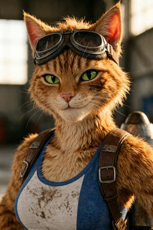
Контроль: почти идентичен K06, грязь даже аккуратнее.
KNP, cinematic film photograph, realistic CGI. Close-up portrait of an adult anthropomorphic orange tabby cat woman jetpack mechanic in an aircraft hangar, head and shoulders, confident smirk, vivid green eyes, aviator goggles on her forehead, real tabby cat head with short fur and cheek tufts, oil smudge on her cheek, blue and white crop top with brown leather harness straps, shallow depth of field, 85mm lens, warm window light.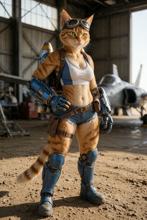
Сила 1.6: почти то же, что на 1.3. Эффект упирается в потолок и ничего не ломает.
KNP, cinematic film photograph, realistic CGI. An adult anthropomorphic orange tabby cat woman jetpack mechanic standing in a dusty aircraft hangar, confident smirk, vivid green eyes, aviator goggles on her forehead. Real tabby cat head with only short fur and cheek tufts. Blue and white crop top with brown leather harness, denim short shorts with utility belt and pouches, blue-and-silver twin-thruster jetpack on her back, oversized blue robotic gauntlets, armored blue knee-high boots, long striped tail. Full body, 35mm lens, natural window light.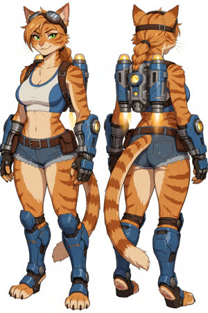
Лист персонажа на 1.0: появилась человеческая коса, бёдра шире.
KNP, Character design sheet of an adult anthropomorphic orange tabby cat woman, a jetpack mechanic, full body front view and back view side by side. Orange fur with darker tiger stripes, cream chest and muzzle, green eyes, confident smirk, aviator goggles on her head. Athletic curvy build. Blue and white crop top with brown leather harness straps, denim blue short shorts with a brown utility belt and pouches, twin blue-and-silver jetpack thrusters with glowing yellow lights on her back, oversized blue mechanical gauntlets, armored blue knee-high boots with digitigrade paws, long striped tail with a cream tip. Plain white background, even studio lighting.Контроль: та же композиция, волосы тоже есть. KNP только расширил бёдра.
Character design sheet of an adult anthropomorphic orange tabby cat woman, a jetpack mechanic, full body front view and back view side by side. Orange fur with darker tiger stripes, cream chest and muzzle, green eyes, confident smirk, aviator goggles on her head. Athletic curvy build. Blue and white crop top with brown leather harness straps, denim blue short shorts with a brown utility belt and pouches, twin blue-and-silver jetpack thrusters with glowing yellow lights on her back, oversized blue mechanical gauntlets, armored blue knee-high boots with digitigrade paws, long striped tail with a cream tip. Plain white background, even studio lighting.Сила 0.6: отличный динамичный фотореалистичный пролёт над аэродромом. ЛУЧШАЯ (KNP), но контроль, судя по K04 и C_real, был бы почти таким же.
KNP, cinematic film photograph, realistic CGI. An adult anthropomorphic orange tabby cat woman jetpack mechanic flying low over a desert airfield at sunset, jetpack thrusters firing blue flames, dust kicked up below, determined expression, vivid green eyes, aviator goggles over her eyes, real tabby cat head with short fur, blue and white crop top with brown leather harness, denim shorts with utility belt, blue robotic gauntlets, armored blue boots, long striped tail streaming behind. Full body, motion blur on background, 50mm lens.Тот же кадр на 1.3: качество то же, грудь больше, добавился ошейник с жетоном.
KNP, cinematic film photograph, realistic CGI. An adult anthropomorphic orange tabby cat woman jetpack mechanic flying low over a desert airfield at sunset, jetpack thrusters firing blue flames, dust kicked up below, determined expression, vivid green eyes, aviator goggles over her eyes, real tabby cat head with short fur, blue and white crop top with brown leather harness, denim shorts with utility belt, blue robotic gauntlets, armored blue boots, long striped tail streaming behind. Full body, motion blur on background, 50mm lens.С Turbo-чекпоинтом на 10 шагах привычная сила 1.0 даёт чистый шум (ID01), 0.5 даёт зерно, 0.7 — мозаику. Рабочий диапазон 0.3–0.35. Сам edit-патч Krea2 уже хорошо держит персонажа, но если референс — лист с двумя видами, при низком ref_boost (0.3) контроль без лоры дважды из трёх нарисовал ДВУХ кошек (C_id07, C_id09). Лора на 0.35 это исправляет и даёт одну фигуру в новой позе, сохраняя дизайн. При ref_boost 0.56 разница маленькая.
0.35 при ref_boost 0.3, дождливый переулок: одна фигура, атмосфера, дизайн точный. ЛУЧШАЯ (Identity).
The same cat woman character from the reference image, rear view walking away down a rainy alley at night, jetpack glowing, looking back. Keep her exact face, orange tabby fur pattern, green eyes, goggles, blue and white crop top, harness, blue shorts, gauntlets, armored boots and jetpack design. Clean cel-shaded game art style like the reference.Identity 1.0 + edit-патч (референс — ваш лист, ref_boost 0.56): ЧИСТЫЙ ШУМ. С Turbo на 10 шагах лора на 1.0 ломает картинку.
The same cat woman character from the reference image, single full-body figure standing in a three-quarter view with one hand on her hip, plain light grey background. Keep her exact face, orange tabby fur pattern, green eyes, goggles, outfit, gauntlets, boots and jetpack.Без лоры, только edit-патч: персонаж уже узнаётся очень хорошо, новая поза.
The same cat woman character from the reference image, single full-body figure standing in a three-quarter view with one hand on her hip, plain light grey background. Keep her exact face, orange tabby fur pattern, green eyes, goggles, outfit, gauntlets, boots and jetpack.Сила 0.5: работает, детали снаряжения ближе к референсу, но появляется зерно на шерсти и фоне.
The same cat woman character from the reference image, single full-body figure standing in a three-quarter view with one hand on her hip, plain light grey background. Keep her exact face, orange tabby fur pattern, green eyes, goggles, outfit, gauntlets, boots and jetpack.Сила 0.7: мозаичные артефакты. Слишком сильно для Turbo.
The same cat woman character from the reference image, single full-body figure standing in a three-quarter view with one hand on her hip, plain light grey background. Keep her exact face, orange tabby fur pattern, green eyes, goggles, outfit, gauntlets, boots and jetpack.Сила 0.3: чисто, очень близко к референсу: щелевые огни джетпака и диски перчаток совпадают лучше, чем у контроля. Оптимум около 0.3.
The same cat woman character from the reference image, single full-body figure standing in a three-quarter view with one hand on her hip, plain light grey background. Keep her exact face, orange tabby fur pattern, green eyes, goggles, outfit, gauntlets, boots and jetpack.0.3, мастерская: костюм точный, руки и ключ чётче, затенение немного объёмнее.
The same cat woman character from the reference image, now sitting on a workbench in a cluttered mechanic workshop, holding a wrench, relaxed smile, warm lamp light, full body visible. Keep her exact face, orange tabby fur pattern, green eyes, goggles, blue and white crop top, harness, blue shorts, gauntlets, armored boots and jetpack.Контроль: практически то же самое.
The same cat woman character from the reference image, now sitting on a workbench in a cluttered mechanic workshop, holding a wrench, relaxed smile, warm lamp light, full body visible. Keep her exact face, orange tabby fur pattern, green eyes, goggles, blue and white crop top, harness, blue shorts, gauntlets, armored boots and jetpack.0.3, полёт: эффектно, но перчатки упрощены, стиль уходит в 3D.
The same cat woman character from the reference image, flying through a cloudy sky with her jetpack firing bright orange flames, dynamic action pose, arms forward, tail streaming behind, seen from a low angle. Keep her exact face, orange tabby fur pattern, green eyes, goggles, blue and white crop top, harness, blue shorts, gauntlets, armored boots and jetpack design.Контроль: почти идентичен ID06. Здесь лора ничего не меняет.
The same cat woman character from the reference image, flying through a cloudy sky with her jetpack firing bright orange flames, dynamic action pose, arms forward, tail streaming behind, seen from a low angle. Keep her exact face, orange tabby fur pattern, green eyes, goggles, blue and white crop top, harness, blue shorts, gauntlets, armored boots and jetpack design.0.35 при ref_boost 0.3, ночная крыша: одна чистая фигура, дизайн и стиль референса сохранены.
The same cat woman character from the reference image, standing on a city rooftop at night with neon signs behind her, three-quarter rear view looking over her shoulder, jetpack glowing. Keep her exact face, orange tabby fur pattern, green eyes, goggles, blue and white crop top, harness, blue shorts, gauntlets, armored boots and jetpack design. Clean cel-shaded game art style like the reference.Контроль при ref_boost 0.3: ПРОВАЛ, две кошки — модель скопировала раскладку листа референса.
The same cat woman character from the reference image, standing on a city rooftop at night with neon signs behind her, three-quarter rear view looking over her shoulder, jetpack glowing. Keep her exact face, orange tabby fur pattern, green eyes, goggles, blue and white crop top, harness, blue shorts, gauntlets, armored boots and jetpack design. Clean cel-shaded game art style like the reference.0.35 при ref_boost 0.56: одна фигура, задняя панель джетпака совпадает с референсом.
The same cat woman character from the reference image, standing on a city rooftop at night with neon signs behind her, three-quarter rear view looking over her shoulder, jetpack glowing. Keep her exact face, orange tabby fur pattern, green eyes, goggles, blue and white crop top, harness, blue shorts, gauntlets, armored boots and jetpack design. Clean cel-shaded game art style like the reference.Контроль при ref_boost 0.56: тоже одна хорошая фигура. При высоком boost дублирования нет.
The same cat woman character from the reference image, standing on a city rooftop at night with neon signs behind her, three-quarter rear view looking over her shoulder, jetpack glowing. Keep her exact face, orange tabby fur pattern, green eyes, goggles, blue and white crop top, harness, blue shorts, gauntlets, armored boots and jetpack design. Clean cel-shaded game art style like the reference.0.35 при ref_boost 0.3, дождливый переулок: одна фигура, атмосфера, дизайн точный. ЛУЧШАЯ (Identity).
The same cat woman character from the reference image, rear view walking away down a rainy alley at night, jetpack glowing, looking back. Keep her exact face, orange tabby fur pattern, green eyes, goggles, blue and white crop top, harness, blue shorts, gauntlets, armored boots and jetpack design. Clean cel-shaded game art style like the reference.Контроль: снова ДВЕ кошки рядом, копия листа референса. Эффект лоры подтверждён.
The same cat woman character from the reference image, rear view walking away down a rainy alley at night, jetpack glowing, looking back. Keep her exact face, orange tabby fur pattern, green eyes, goggles, blue and white crop top, harness, blue shorts, gauntlets, armored boots and jetpack design. Clean cel-shaded game art style like the reference.0.35 при ref_boost 0.3, стоит на колене: естественная поза, снаряжение точное, ветер добавил волосы.
The same cat woman character from the reference image, kneeling on one knee on a launch pad at sunrise, adjusting a gauntlet, determined look, wind blowing her fur, airships in the sky. Keep her exact face, orange tabby fur pattern, green eyes, goggles, blue and white crop top, harness, blue shorts, gauntlets, armored boots and jetpack design. Clean cel-shaded game art style like the reference.Контроль: дубля нет, почти так же, поза кулаков странная.
The same cat woman character from the reference image, kneeling on one knee on a launch pad at sunrise, adjusting a gauntlet, determined look, wind blowing her fur, airships in the sky. Keep her exact face, orange tabby fur pattern, green eyes, goggles, blue and white crop top, harness, blue shorts, gauntlets, armored boots and jetpack design. Clean cel-shaded game art style like the reference.Всего 68 картинок. Оригиналы PNG с метаданными лежат в StabilityMatrix\Images\Text2Img\loratest_cat\.